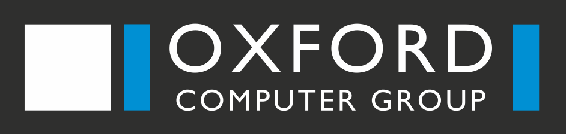

<div class="sidebar-filter" fxLayout="column" fxLayoutAlign="start center">
  <div class="logo" fxFlex="none">
    <a routerLink="">
      
      
    </a>
  </div>
  <div class="sidebar-seperator" fxFlex="none"></div>
  <div class="sidebar-nav" fxFlex="none" fxLayout="row" fxLayoutAlign="end center" (click)="resize()">
    <mat-icon class="nav-icon" style="margin-right: -18px;">{{icon}}</mat-icon>
    <mat-icon class="nav-icon" style="margin-right: -5px;">{{icon}}</mat-icon>
  </div>
  <div class="sidebar-item" fxFlex="none" *ngFor="let item of sidebarItems">
    <div [ngClass]="{'sidebar-item-focus':isFocusedItem(item)}">
      <a [routerLink]="item.path" fxLayout="row">
        <i class="material-icons" fxFlex="none">{{item.icon}}</i>
        <div fxFlex="none" *ngIf="size==='expanded'">{{item.title|translate}}</div>
      </a>
    </div>
  </div>
</div>
